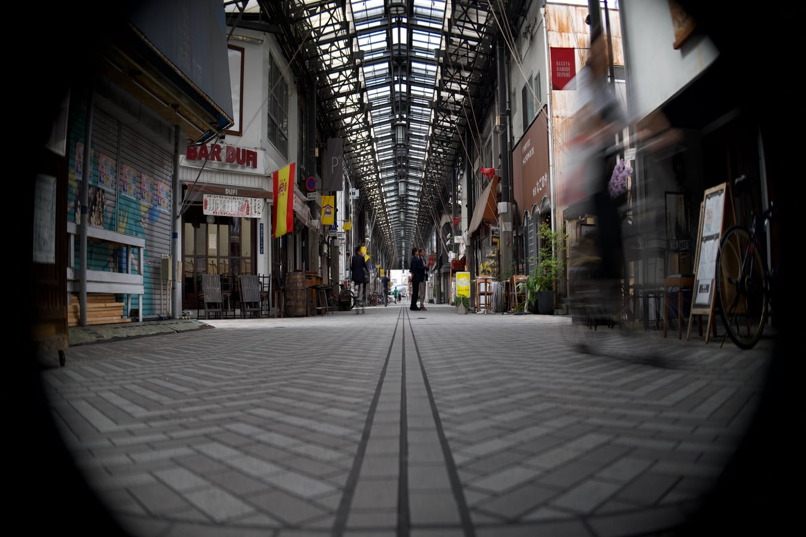

Desqueeze.io
Desqueeze anamorphic RAW photos losslessly. Offline, free and open source
Before and after
Move across the photo. On the left, the ARW as the sensor saw it. On the right, the DNG that Lightroom opens.

Built for anamorphic photography
-
Lossless by default
The squeeze factor is written as DNG metadata. No pixel is resampled, and it can be undone.
-
Offline and private
No account, no uploads, no telemetry. Everything runs on your machine, converters included.
-
RAW in, DNG out
25 RAW formats from 825 cameras, plus JPEG, PNG, TIFF and WebP. Export a flat file when you need one.
-
Free and open source
MIT licensed, with every line on GitHub. It was useful for me; it may be useful for you too.
Drop, set, desqueeze
-
Drop files
Drag photos or folders anywhere onto the window, or pick them
-
Set the factor
1.33x, 1.5x, 2x or custom, as DNG or a flat file
-
Desqueeze
One click, and the files land in a
desqueezedfolder beside the originals
Common questions
What does lossless mean here?
In DNG mode nothing is resampled. The squeeze factor goes into the file's
DefaultScale tag; Lightroom, Camera Raw and other DNG-aware apps apply it on open, and
it can be changed or removed later. The other output formats bake the stretch into the pixels.
Which files does Desqueeze accept?
RAW: 3fr ari arw cr2 cr3
crw dcr dcs dng erf iiq
kdc mef mos mrw nef nrw
orf pef raf raw rw2 sr2
srf srw. Bitmaps: jpg jpeg png
tif tiff webp. Output is DNG, JPEG, PNG, TIFF or WebP.
Is my camera supported?
RAW decoding comes from DNGLab: 825 cameras from 32 manufacturers, listed in the repository. Bitmaps work regardless of camera.
Does it work offline?
Yes. DNGLab, dcraw_emu and ExifTool ship inside the app. Nothing else to install, no
network access while processing.
Where do the files go?
Into a desqueezed folder next to the originals, which are never modified. Files already
desqueezed are skipped.
Are Intel Macs supported?
Not yet. The macOS build is for Apple Silicon; Windows x64 and Linux x86_64 builds are available.
Download Desqueeze
Free and open source v0.1.2
Windows may show a SmartScreen warning on first install. Click More info, then Run anyway.
Make the AppImage executable first: chmod +x Desqueeze-Linux-x86_64.AppImage
If you found this software useful you can buy me a coffee. If you found any issues, please report them.